GitHub стал краеугольным камнем для всего программного обеспечения с открытым исходным кодом. Разработчики любят его, сотрудничают с ним и постоянно создают новые великолепные проекты с помощью него. Помимо хостинга вашего кода, главная привлекательность GitHub заключается в использовании его в качестве инструмента совместной работы. В этом уроке давайте рассмотрим некоторые из наиболее полезных функций GitHub, особенно полезных для работы в командах, что делает его еще более эффективным, продуктивным и, самое главное, забавным!
Github разработка в команде
Одна вещь, которую я считаю очень полезной, - это интеграция Github Wiki в основной проект исходного кода.
В этом руководстве предполагается, что вы уже знакомы с Git, распределенной системой управления версиями с открытым исходным кодом, созданной Линусом Торвальдсом в 2005 году. Если вам нужна ревизия или поиск в Git, посетите наш предыдущий курс скринкастов или даже несколько статей на эту тему. Кроме того, у вас уже должна быть учетная запись Github, а также некоторые базовые функции, такие как создание репозитория и внесение изменений в Github. Если нет, обратитесь к предыдущим учебникам.
В мире разработки при создании своего проекта работа в команде будет неизбежной. В этом руководстве по совместной разработке на Github мы изучим некоторые из наиболее распространенных инструментов, которые нам обычно нужны при работе с командами разработчиков программного обеспечения. Обсуждаемые инструменты:
Предпочитаете скринкаст?
Если вы предпочитаете скринкаст, то прыгайте чуть ниже, чтобы просмотреть его, а этот учебник используйте в качестве сопутствующих заметок:
Инструмент 1: Добавление членов команды
Как правило, существует два способа настройки Github для совместной работы:
Organizations
Если вы контролируете несколько команд и хотите установить разные уровни доступа для каждой команды с различными членами и добавить каждого участника в разные репозитории, то организация будет для вас наилучшим вариантом. Любая учетная запись пользователя Github уже может создавать бесплатные организации для репозиториев с открытым исходным кодом. Чтобы создать организацию, просто перейдите на страницу настроек своей организации:
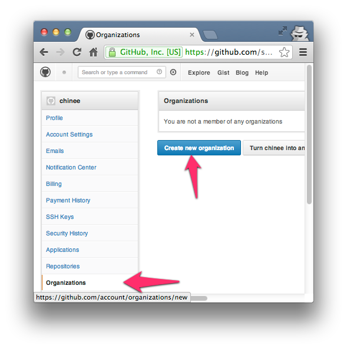
Чтобы получить доступ к странице команд для вашей Организации, вы можете просто перейти на http://github.com/organizations/[organization-name]/teams, чтобы просмотреть их или даже посетить https://github.com/organizations/[organization-name]/teams/new Для создания новых команд с тремя уровнями доступа, такими как:
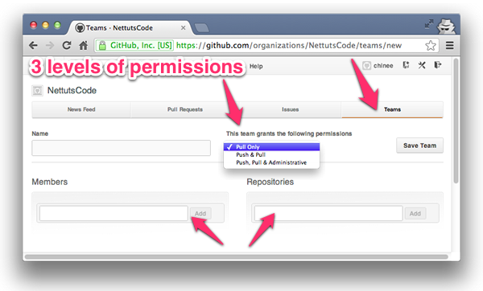
Соавторы
Коллабораторы (соавторы) используются для предоставления возможности «читать + писать» в один репозиторий, принадлежащий личной учетной записи. Чтобы добавить Collaborators (другие личные учетные записи Github), перейдите на страницу https://github.com/[username]/[repo-name]/settings/collaboration:
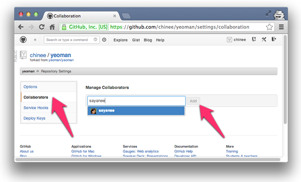
После этого каждый соавтор увидит изменение статуса доступа на странице репозитория. После того, как у нас есть доступ на запись к репозиторию, мы можем сделать git clone, поработать над изменениями, сделать git pull для извлечения и слияния любых изменений в удаленном репозитории и, в конечном счете, git push, для обновления удаленного репозитория с собственными изменениями:
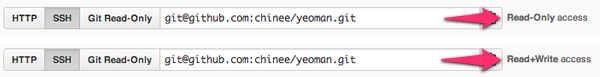
Инструмент 2: Pull Requests
Pull Requests - отличный способ внести свой вклад в репозиторий, сделав его форк. В конце дня, если мы хотим, мы можем отправить pull request владельцу репозитория, чтобы объединить наши изменения кода. Сам pull request может включать обсуждение качества кода, функций или даже общей стратегии.
Давайте теперь рассмотрим основные шаги для pull request.
Инициирование pull request
В Github есть две модели для pull request:
Здесь мы видим рабочий процесс между двумя пользователями (repo-owner и forked-repo-owner) для модели Fork and Pull:
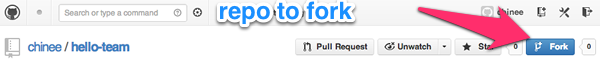
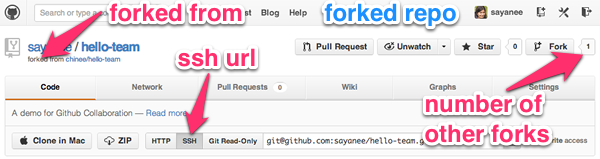
|
2 |
$ git clone [ssh-url] [folder-name] $ cd [folder-name] |
|
$ git checkout -b [new-feature] |
|
2 3 |
$ git add . $ git commit -m "information added in readme" $ git checkout master |
|
2 3 4 5 6 7 |
$ git branch * master readme $ git remote -v origin git@github.com:[forked-repo-owner-username]/[repo-name].git (fetch) origin git@github.com:[forked-repo-owner-username]/[repo-name].git (push) $ git push origin readme |
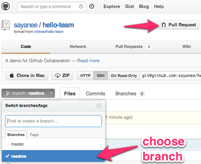
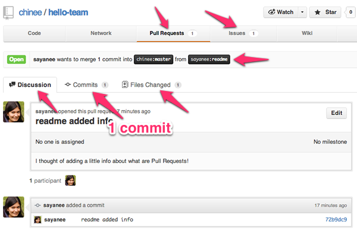
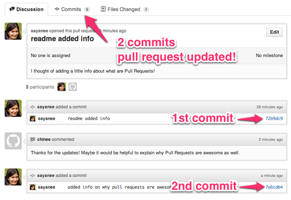
Слияние пул реквеста
Если вы являетесь владельцем оригинального репозитория, существует два способа слияния входящего пул реквеста:
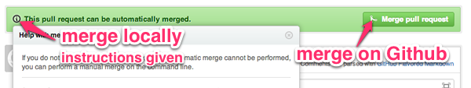
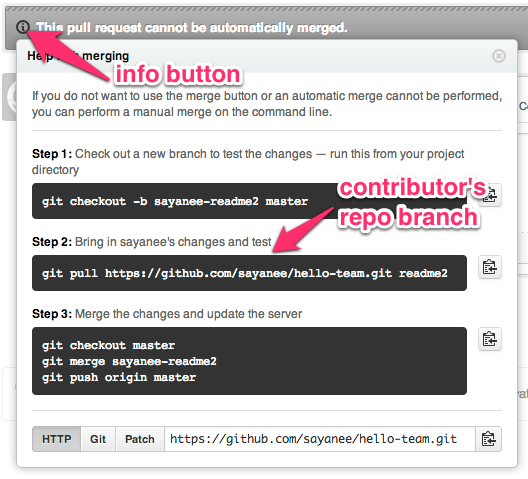
Существуют различные модели создания веток, используемые для управления версиями в командах разработки программного обеспечения. Вот две популярные модели рабочего процесса git: (1) рабочий процесс Github, который имеет простую ветвящуюся модель и использует запросы на pull, и (2) Gitflow, который имеет более обширное разветвление. Модель, которая в конечном итоге будет выбрана, определенно будет меняться в зависимости от команды, проекта и ситуации.
Инструмент 3: Отслеживание ошибок
Pull Requests - отличный способ внести свой вклад в репозиторий сделав его форк.
В Github центр для отслеживания ошибок - это issues. Несмотря на то, что они в основном предназначены для отслеживания ошибок, также полезно использовать «Issues» следующими способами:
Давайте рассмотрим некоторые особенности проблем:
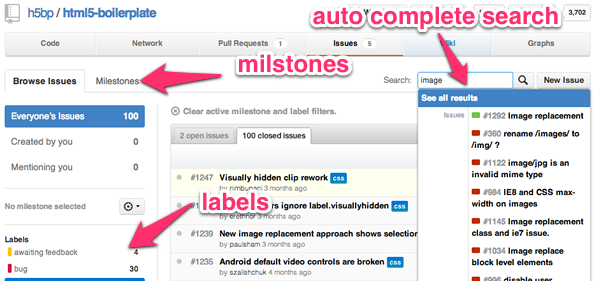
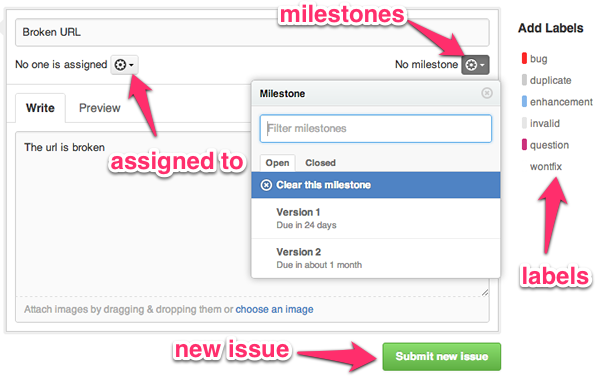
|
2 3 |
$ git add . $ git commit -m "corrected url. fixes #2" $ git push origin master |
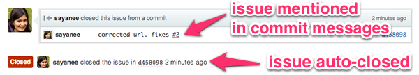
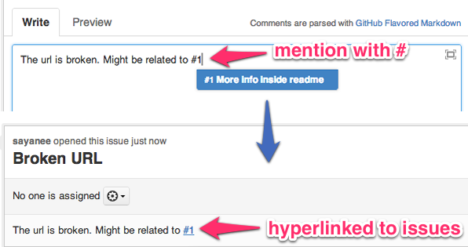
Инструмент 4: Аналитика
Понятно, что мы можем тесно связать наш список задач и обновления с нашими кодами.
Есть два инструмента, которые дают представление о репозитории - Graphs and Network. Графики Github отображает соавторов и их коммиты, в то время как Github Network обеспечивает визуализацию для каждого участника. Эти аналитики и графики становятся очень мощными, особенно при работе в командах.
Графики
Графики предоставляют подробную аналитику, такую как:
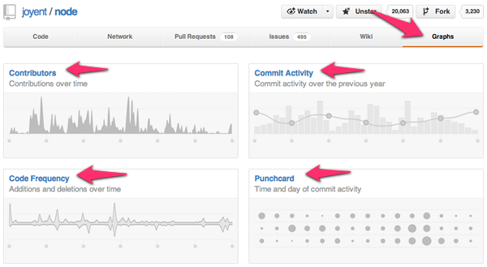
Network
Github Network - это мощный инструмент, который позволяет вам видеть, как коммитит каждый участник и как они связаны друг с другом. Когда мы смотрим на визуализатор целиком, мы видим каждую фиксацию в каждой ветви каждого репозитория, принадлежащего сети. Очень круто!
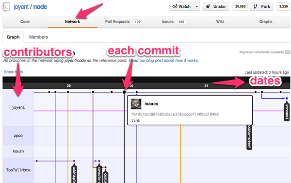
Инструмент 5: Управление проектами
В то время как issues Github имеют возможности управления проектами с помощью Issues и Milestones, некоторые команды могут предпочесть другой инструмент из-за других функций или существующего рабочего процесса. В этом разделе мы увидим, как мы можем связать Github с двумя другими популярными инструментами управления проектами - Trello и Pivotal Tracker. С помощью сервисов Github мы можем автоматизировать задачу обновления с помощью коммитов, проблем и многих других действий. Эта автоматизация помогает не только экономить время, но и повышает точность обновлений для любой команды разработчиков программного обеспечения.
Github и Trello
Trello обеспечивает простой, визуальный способ управления задачами. Используя Agile Software Development, карточки Trello могут эмулировать простую виртуальную Kanban Board. В качестве примера мы автоматически создадим карточку Trello всякий раз, когда будет появляться новый пул реквест с помощью Github Service Hooks. Давайте пройдем через все шаги!
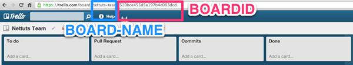
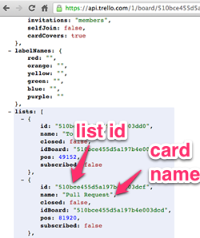
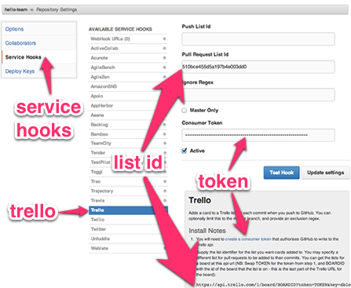
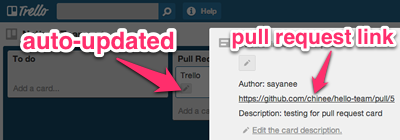
Github и Pivotal Tracker
Pivotal Tracker - еще один легкий гибкий инструмент управления проектами, в котором планирование на основе истории позволяет команде легко взаимодействовать, мгновенно реагируя на различные изменения и прогресс проекта. Основываясь на текущем прогрессе команды, он также может создавать диаграммы для анализа скорости команды, итераций разработки, релизов и прочего. В этом кратком примере мы автоматически доставим историю, связав ее с коммитом на Github!
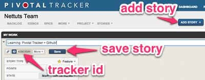
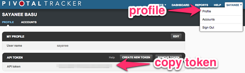
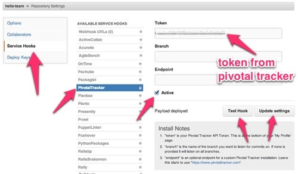
|
2 3 |
$ git add . $ git commit -m "Github and Pivotal Tracker hooks implemented [delivers #43903595]" $ git push |
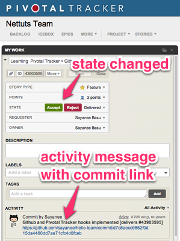
С примерами Trello и Pivotal Tracker ясно, что мы можем тесно связать наш список задач и обновления с нашими коммитами. Это огромная экономия времени при работе в команде, и это повышает точность при связывании задач с точными фиксациями. Хорошей новостью является то, что если вы уже используете другие инструменты управления проектами, такие как Asana, Basecamp и другие, вы также можете создать Service Hooks аналогичным образом. Если для вашего текущего инструмента управления проектами нет существующих сервисных хуков, вы даже можете их создать сами!
Инструмент 6: Непрерывная интеграция
Непрерывная интеграция (CI) является важной частью всех проектов разработки программного обеспечения, с которыми работают команды разработчиков. CI гарантирует, что, когда разработчик выкатывает свой код, автоматическая сборка (включая тесты) быстро обнаруживает ошибки интеграции. Это определенно уменьшает ошибки интеграции и делает быструю итерацию намного более эффективной. В этом примере мы увидим, как можно использовать Travis CI вместе с Github для CI для обнаружения ошибок, а также для рекомендаций слияния, когда проходят все тесты.
Настройка Travis CI
Мы будем использовать простой проект «hello world» для node.js вместе с grunt.js в качестве инструмента сборки для настройки Travis CI проекта. Вот файлы, находящиеся в проекте:
|
2 3 4 5 6 |
var http = require('http'); http.createServer(function (req, res) { res.writeHead(200, {'Content-Type': 'text/plain'}); res.end('Hello World in Node!\n') // without semicolon, this will not pass linting }).listen(1337, '127.0.0.1'); console.log('Server running at http://127.0.0.1:1337/'); |
|
02 03 04 05 06 07 08 09 10 11 12 |
{ "name": "hello-team", "description": "A demo for github and travis ci for team collaboration", "author": "name <email@email.com>", "version": "0.0.1", "devDependencies": { "grunt": "~0.3.17" }, "scripts": { "test": "grunt travis --verbose" } } |
|
2 3 4 5 6 7 8 9 |
module.exports = function(grunt) { grunt.initConfig({ lint: { files: ['hello.js'] } }); grunt.registerTask('default', 'lint'); grunt.registerTask('travis', 'lint'); }; |
|
2 3 |
language: node_js node_js: - 0.8 |
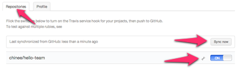
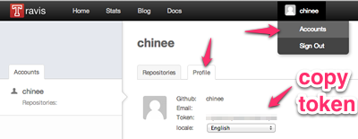
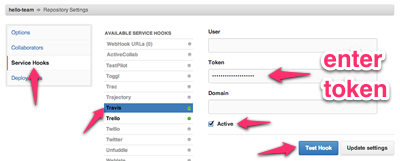
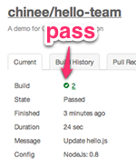
Travis CI и пул реквесты
Раньше, без какого-либо CI в процессе пул реквеста, этапы выполнялись примерно так: 1) создание запроса (2) слияние (3), тестируем все ли работает. Когда Travis CI подключится к пул реквесам, мы сможем инвертировать шаги 2 и 3, что еще больше ускорит принятие решений о том, следует ли сливать изменения, так как Travis даст нам статус билда для каждого пул реквеста. Давайте посмотрим, как это сделать.
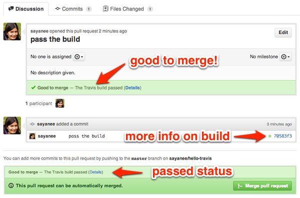
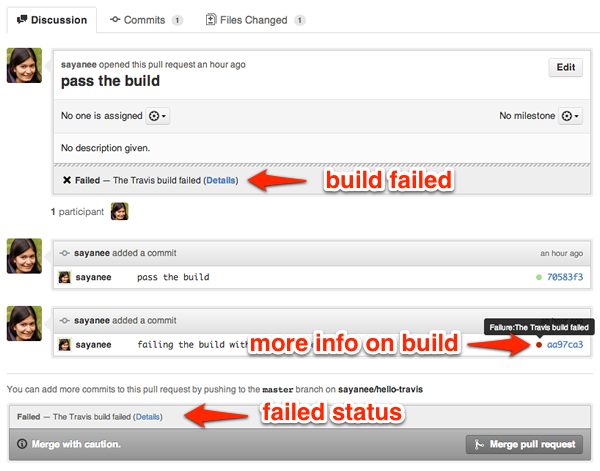
Travis CI с Github чрезвычайно полезен для команд из-за автоматических сборок и немедленного уведомления. Это, безусловно, делает цикл исправления ошибок намного короче. Если вы используете Jenkins, еще один популярный инструмент CI, то вы тоже можете настроить сервисные хуки Github.
Инструмент 7: Обзор кода
С каждой фиксацией изменений Github позволяет использовать чистый интерфейс для общих комментариев или даже конкретных комментариев к отдельной строчке кода. Возможность делать комментарии или задавать вопросы по каждой отдельной строке кода очень полезна при проведении обзоров строка за строкой. Чтобы просмотреть встроенные комментарии, установите флажок в верхней части каждой фиксации.
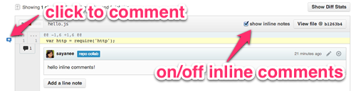
Давайте рассмотрим некоторые шаблоны URL-адресов, которые могут быть использованы, чтобы помочь нам в обзоре кода, быстро предоставив нам различия между фиксациями:
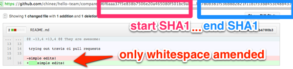
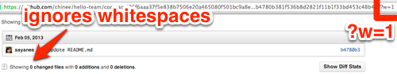
Инструмент 8: документация
В этом разделе мы рассмотрим два метода создания документации:
Github Wiki
В каждом репозитории может быть создана Github Wiki, и это может оказаться очень удобно иметь в одном репозитории как исходный код, так и документацию для него. Чтобы создать Wiki, просто перейдите на вкладку Wiki в главном заголовке, и вы готовы к созданию страниц с информацией. Сама Wiki имеет собственное управление версиями, и данные могут быть клонированы на наш локальный компьютер для обновлений или даже автономного доступа.
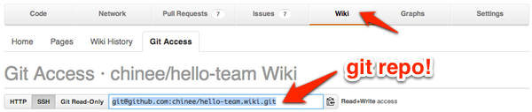
Одна вещь, которую я нахожу очень полезной, - это интеграция Github Wiki в основной проект исходного кода, так что мне не нужно поддерживать два отдельных проекта git. Для этого я добавляю Wiki git repo как субмодуль из ветки master. Если вы используете Travis CI или любой другой CI, убедитесь, что инструмент сборки игнорирует подмодуль wiki. Для файла Travis CI .travis.yml добавьте следующее:
|
2 |
git: submodules: false |
Затем добавьте wiki-подмодуль git в основной репозиторий кода:
|
2 3 4 5 6 7 8 9 |
$ git submodule add git@github.com:[username]/[repo-name].wiki.git Cloning into 'hello-team.wiki'... remote: Counting objects: 6, done. remote: Compressing objects: 100% (3/3), done. remote: Total 6 (delta 0), reused 0 (delta 0) Receiving objects: 100% (6/6), done. $ git add . $ git commit -m "added wiki as submodule" $ git push origin master |
Теперь Wiki будет выглядеть как подмодуль в основном проекте с исходным кодом.
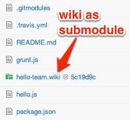
Github Hubot
Если коротко, Hubot может сделать процесс ведения документации гораздо приятнее, добавляя уведомление командных обсуждений о важных коммитах.
Hubot - это просто бот-чат, который может получать информацию или предоставлять уведомление при подключении к Github коммитам, issues или активности. В команде, которая стремится значительно сократить количество встреч или даже полностью устранить их, Hubot с интерфейсом чата среди членов команды помогает документировать каждую отдельную дискуссию. Это, безусловно, способствует гибкому графику работы, так как никто не должен присутствовать одновременно для обсуждения. Предупреждение: Hubot ужасно вызывает привыкание!
Итак давайте начнем с настройки Hubot, размещенным на Heroku, и ботом с интерфейсом чата Campfire! Для обоих и Heroku и Campfire есть бесплатные версии, с которым можно начать.
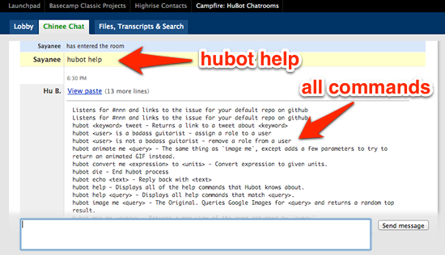
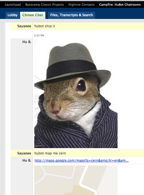
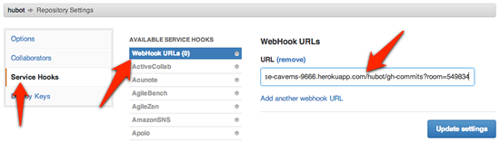
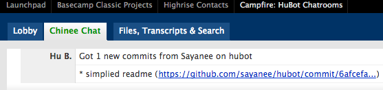
Ознакомьтесь с другими скриптами Hubot, связанными с Github, или если вы хотите написать один, есть крутой учебник по этому поводу! Короче говоря, Hubot может значительно добавить веселья в документировании и уведомлении командных дискуссий о важных коммитах, проблемах и действиях, происходящих с нашими репозиториями на Github. Попробуйте его!
В качестве заключительной заметки о командной работе на Github, вот несколько советов по производительности:
Использование Github не для разработки
Большинство думает использовать Github только для программных проектов. В конце концов, Github был создан специально для создания кода. Но есть некоторые классные репозитории Github, которые используются для проектов, не связанных с кодом, и они были одинаково великолепны для сотрудничества и обсуждения. Поскольку эти проекты также доступны с открытым исходным кодом, и каждый может внести свой вклад, быстро исправлять ошибки, легко сообщать об ошибках и эффективно сотрудничать с единомышленниками. Просто ради интереса, вот некоторые из них:
И интересно, что думает об этом команда Github?
«Мы кайфуем от использования GitHub»
Дополнительные ресурсы
Получайте больше удовольствия от совместной работы!
Таким образом, это был набор инструментов для совместной работы в Github. Большинство из них служат быстрыми аналитическими инструментами или даже автоматизацией, что помогает сэкономить время при работе с двумя или несколькими товарищами по команде. У вас есть больше советов Github для команд? Давайте поделимся ниже!